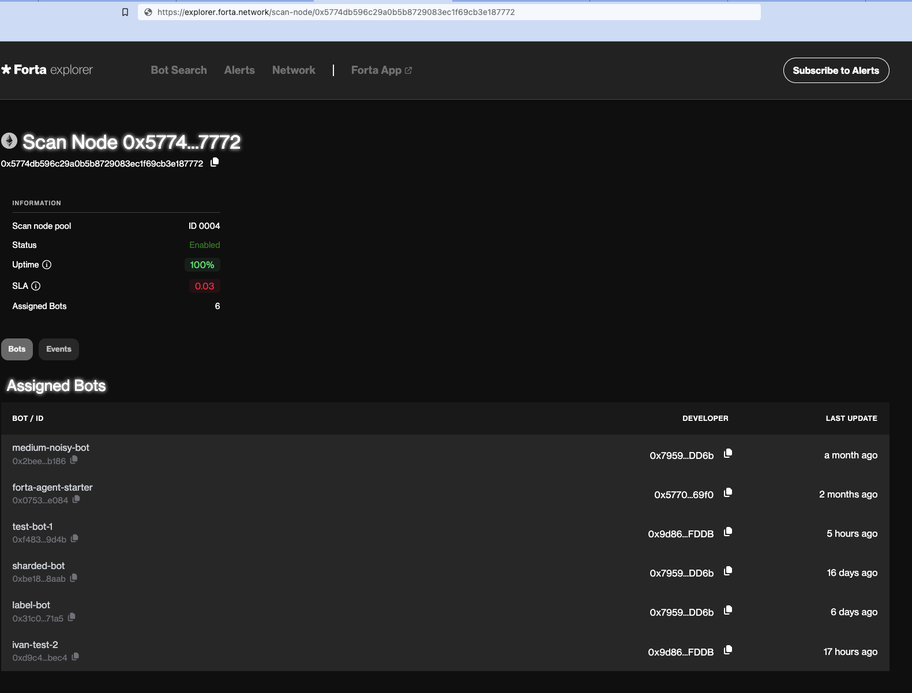

Out of date
This page is deprecated and no longer maintained. For the latest information, please visit the Guide.
Run a Scan Node
This page contains the steps and technical recommendations to help you set up your node. Please always refer to this documentation for the most up-to-date node setup and configuration details.
For other information including rewards, please check out our node operators page if you have not visited yet.
Scan Node Requirements
Resources
The following are the requirements for running a Forta scan node.
- 64-bit Linux distribution
- CPU with 4+ cores
- 16GB RAM
- Connection to Internet
- Docker v20.10+
- 100GB SSD (in addition to full node requirements)
- Recommended: Full node (any chain)
Security
Forta scan node software uses isolation techniques to prevent detection bot code from executing malicious actions. Please make sure you take extra measures and strengthen your host machines:
- Implement iptables rules the disallow access to sensitive subnetworks.
- Do not equip your machines with strong cloud privileges.
Stake
All nodes need to be registered to run within a specific pool. In order to make your node operational in the network, please visit the scanner pool management guide to find out how you can create, manage and stake on a scanner pool.
In the following steps, you will be able to use your pool ID for scan node registration.
Stake on the pool first
Make sure you stake on your pool first before registering any scan node to it, as suggested in scanner pool management guide. There is a minimum per-scan-node stake amount that needs to be satisfied in every pool. Adding a scan node to a pool without adding extra stake can render all nodes in a scan node non-operational so this is not allowed by the contract.
Optional: Run your Ethereum full node
If you are planning on setting up a Forta node, your own full node node is the most reliable option as a provider to your Forta node.
The most preferred full node option for Ethereum mainnet is running an Erigon node. Your Erigon node (Execution Layer) needs to run with a beacon node (Consensus Layer). For more details, please make sure you visit The Merge section on this page.
erigon-rpcdaemon \
--http.vhosts '*' --http.port 8545 \
--http.addr 0.0.0.0 --http.corsdomain '*' \
--http.api 'eth,net,web3,trace' --private.api.addr=localhost:9090 \
--authrpc.addr 0.0.0.0 --authrpc.jwtsecret <secret>
erigon --private.api.addr=localhost:9090
Ethereum node access
Be sure to set --http.vhosts to allow hostname access, and enable eth,net,web3 HTTP APIs. Note that trace is only applicable for Ethereum mainnet.
Synchronize system time
To produce correct timestamps on the alerts and avoid authorization problems at the time of publishing alerts, you must ensure at all times that the system time is correct. If the system time is not correct, your node will fail to publish alerts and may generate no rewards as a result.
We suggest using systemd-timesyncd which is widely available and sufficient as a time synchronization daemon. After started, it will periodically synchronize the system time in background.
To enable, systemd-timesyncd and check the result, you can do:
$ sudo systemctl enable systemd-timesyncd
$ sudo systemctl start systemd-timesyncd
$ timedatectl status
Local time: Tue 2022-01-01 17:00:00 -03
Universal time: Tue 2022-01-01 20:00:00 UTC
RTC time: Tue 2022-01-01 20:00:00
Time zone: America/Argentina/Buenos_Aires (-03, -0300)
System clock synchronized: yes
NTP service: active <------------------- (it worked)
RTC in local TZ: no
Install and Configure Docker
Install Docker (at least v20.10)
Add a file called daemon.json to your /etc/docker directory with the following contents:
{
"default-address-pools": [
{
"base":"172.17.0.0/12",
"size":16
},
{
"base":"192.168.0.0/16",
"size":20
},
{
"base":"10.99.0.0/16",
"size":24
}
]
}
Avoid networking conflicts
Please confirm these network ranges don't conflict with your node's network, especially if you use VPC peering, VPNs, or other non-trivial networking settings.
Restart docker with systemctl restart docker
Ensure docker is running. You can run docker ps and you should not get any errors and see a list of header columns.
Run Docker as a non-root user
To run docker as a non-root user, do the following:
Add the docker group (it may already exist)
Add your user to that group.
You must exit and login again to take effect
Make sure Docker is running
Once docker ps gives you a list of headers, continue to the next section.
Install Forta
The Forta scan node software is available for popular 64-bit Linux distributions using official Forta repositories. Package installation methods are verifiable (auto-verified during installation) and help you install required dependencies.
Install via YUM (CentOS, Fedora, Red Hat Enterprise Linux etc.)
$ sudo curl https://dist.forta.network/repositories/yum/Forta.repo -o /etc/yum.repos.d/Forta.repo -s
$ sudo yum install forta
Install via APT (Ubuntu, Debian etc.)
$ sudo curl https://dist.forta.network/pgp.public -o /usr/share/keyrings/forta-keyring.asc -s
$ echo 'deb [signed-by=/usr/share/keyrings/forta-keyring.asc] https://dist.forta.network/repositories/apt stable main' | sudo tee -a /etc/apt/sources.list.d/forta.list
$ sudo apt-get update
$ sudo apt-get install forta
Install Manually
Install Docker (at least v20.10)
Download the latest x86-64 release binary and install
Make the binary executable
Initial Setup
Forta scan node's CLI allows you to set up your first Forta configuration directory along with creating and managing your scan node's private key.
Initialize Forta Directory
Initialization creates a private key that will sign the alerts from your scan node. You must set the FORTA_PASSPHRASE environment variable or provide the --passphrase flag to the init command.
Initialize Forta using the forta init command
Forta Directory
By default, the forta directory is located in ~/.forta. If you would like to use a different directory, either set the FORTA_DIR env var or provide the --dir flag to every command. Init command will initialize your Forta configuration and key to this directory.
This command generates a config directory, a private key and outputs your address.
Scanner address: 0xAAA8C491232cB65a65FBf7F36b71220B3E695AAA
Successfully initialized at /yourname/.forta
This is the value that will be registered in the scan node registry smart contract (as uint256).
If you need to find out your address later again, you can run forta account address.
Recovery
Not required for node setup
If you have visited this documentation to set up your node, you can safely skip this Recovery section. Just keep in mind that it can save you time later to back up your config now.
"I lost my scan node data, now what?"
The scan node private key does not own or control the staked FORT.
Losing the scan node private key will require you to dispose your old scan node and create a new one. This is as easy as disabling the lost scan node from your pool and registering a new one.
- Disable the lost node from your pool on https://app.forta.network.
- Do
forta init --passphrase <your-passphrase>to initialize a new node. - Now you have a new
~/.fortadirectory with a new private key. - Copy your backed up config to
~/.forta/config.ymlor configure that file from scratch. - Register the scan node.
Configure systemd
If forta ever stops running, it must be restarted. If you used a package installation method, there is a Forta systemd service that can be enabled and overridden with your passphrase and config directory environment variables.
Please do not modify the original forta.service file and instead prefer the override recommended here. This is needed because the original file will be replaced next time you update forta through yum or apt.
To override systemd service environment, you can set the variables in /etc/systemd/system/forta.service.d/env.conf like:
[Service]
Environment="FORTA_DIR=<your_forta_config_dir>"
Environment="FORTA_PASSPHRASE=<your_forta_passphrase>"
Alternative Systemd Override Path
In our previous tests, it was confirmed that this approach works in Ubuntu, Debian, CentOS and Fedora. However, it has been reported by several node operators that it sometimes does not work as expected in some distributions. If you are not able to make this work using the suggested path above, you can try writing to /lib/systemd/system/forta.service.d/env.conf instead, as an alternative.
Configure Chain APIs
In your Forta directory, there now is a config.yml file. You must configure that file so that your scan node knows how to get its blockchain data.
Your scan node will be registered to scan a single chain. To let your scan node pull chain data, you need to provide a valid scan.jsonRpc.url.
Public JSON-RPC APIs
While there are public endpoints available for many chains, please note that the quality of an endpoint drives the quality of a scan node's output which in turn affects rewards and slashing. We strongly recommend providing your own blockchain node or using Alchemy to setup your Forta node
If you are scanning Ethereum mainnet, trace.jsonRpc.url must also be set as an endpoint that supports trace_block method. If you have your own Ethereum node that supports it (e.g. Erigon), you can use that node. If not, you can use an endpoint from a paid plan like Alchemy Growth plan.
JSON-RPC APIs
Detection bots are able to call JSON-RPC APIs using the scan node's configured endpoints. By default, this is the scan.jsonRpc.url but one can separate bot-specific traffic by specifying a jsonRpcProxy.jsonRpc.url. We suggest setting this as your own node's JSON-RPC API endpoint if you are running one. If you are not running a full node, you can use scan.jsonRpc.url to point the bots to another reliable API.
Other chains
If your node is scanning chains other than Ethereum mainnet, please checkout Scanning other chains section to see examples.
HTTP
Here is an example configuration to scan Ethereum mainnet using Alchemy Growth plan and HTTP endpoints:
chainId: 1
# The scan settings are used to retrieve the transactions that are analyzed
scan:
jsonRpc:
url: https://eth-mainnet.alchemyapi.io/v2/KEY
# This is needed only for scanning Ethereum Mainnet and Fantom
trace:
jsonRpc:
url: https://eth-mainnet.alchemyapi.io/v2/KEY
# Optional: Bots make extra requests to check the chain state. You can point
# them to a different reliable API by using this. This defaults to `scan.jsonRpc.url`.
jsonRpcProxy:
jsonRpc:
url: http://different-api:8545
Another example configuration to scan Ethereum mainnet using your Erigon node's HTTP endpoint:
chainId: 1
scan:
jsonRpc:
url: http://your-node:8545
trace:
jsonRpc:
url: http://your-node:8545
# Defaulting to `scan.jsonRpc.url` if not set - the best option when running a node
# jsonRpcProxy:
# jsonRpc:
# url: http://your-node:8545
WebSocket
If you have a WebSocket endpoint available from your full node or from your JSON-RPC provider (e.g. Alchemy), you can use that endpoint as scan.jsonRpc.url. This will ensure that your node will always fetch the latest block as fast as possible.
Notifications
The WebSocket endpoint needs to support block header notifications. Please check docker logs forta-scanner -f output to see any issues after starting the node.
Proxy
If you set the scan API as a WebSocket endpoint, please set jsonRpcProxy.jsonRpc.url as an HTTP JSON-RPC API. Your node may get a low score if you skip this!
Example:
chainId: 1
scan:
jsonRpc:
url: wss://<websocket-api>
trace:
jsonRpc:
url: wss://<websocket-api>
jsonRpcProxy:
jsonRpc:
url: https://<http-api>
Retries
The block feed in the node always retries any request whenever eth_getBlockByNumber, eth_getLogs or trace_block does not work. The default retry interval is 8 seconds. While this is a sufficient retry interval on average for all chains, you can reduce this interval so your node catches up faster.
Effect to score
Reducing the retry interval can help you achieve a higher SLA score in case you have any concerns about your node's current score. Please keep in mind that small retry intervals can cause a bump in the amount of total requests because of the increase in the amount of retries.
To reduce the retry interval to two seconds, you can add retryIntervalSeconds to the scan section of your config like:
Configure Registry API
Warning
Quality of this API is as important as the rest of the APIs configured for scanning.
There are a set of Forta smart contracts on Polygon, which allows finding out:
- the latest list of bots which a scan node should run
- the latest Forta node service Docker image release
All Forta nodes are expected to run with the latest release and the latest list of the assigned bots. To be able to read these values, Forta nodes use https://rpc.ankr.com/polygon by default but this API can rate-limit your node. Please consider changing this to a free Polygon API with high availability, e.g. Alchemy Polygon API, Chainstack Polygon API, by adding the following configuration:
Custom Telemetry (Optional)
You can specify a custom telemetry handler in the config.yml file if you would like to receive health reports from your nodes regularly:
The forwarded content is a gzipped JSON which is similar to the forta status --format json output.
[
...
{
"name": "forta.container.forta-scanner.service.agent-pool.agents.total",
"status": "ok",
"details": "14"
},
{
"name": "forta.container.forta-scanner.service.block-analyzer.event.input.time",
"status": "ok",
"details": "2022-08-17T10:36:20Z"
},
{
"name": "forta.container.forta-scanner.service.block-analyzer.event.output.time",
"status": "ok",
"details": "2022-08-17T10:36:20Z"
},
{
"name": "forta.container.forta-scanner.service.block-feed.last-block",
"status": "info",
"details": "15358230"
}
...
]
Keep Your Node Up-To-Date
Deprecation
All nodes need to start running the latest container versions within 7 days after the latest release, by default. The releases made on GitHub may contain a release config that overrides the version support and reduces the deprecation time:
# @begin release_config
deprecationPolicy:
supportedVersions:
- v0.7.9
activatesInHours: 72
# @end release_config
The nodes which run unallowed versions may receive a low SLA score.
Auto-updates
To help you in this process, the node software includes an auto-updater that detects new container images, pulls, stops old containers and starts new containers.
In order to ensure that this feature works at all times, please set the registry API to a reliable one, as suggested in the Configure Registry API section.
Each node updates at a specific time within 24 hours, unless overridden by the config in the release made on GitHub:
To receive the container update without stopping the bots and updating the CLI, please do
and the updater container will pick up the latest release when it is started again.Manual Update
You need manual update through APT or YUM only if you need to receive the latest CLI features. As in the above example, CLI of an older version is able to successfully run the service container image of the newer version.
To disable the auto-update behavior, you can add this to your config:
Disabling Auto-Updates
Disabling this feature is strongly discouraged. Not following the latest version can cause loss of rewards.
Check the running version
Starting with v0.7.10, forta version outputs the CLI and container version separately. While using the CLI from versions provides a better experience, it is only necessary to have the latest container version.
Example output:
$ forta version
{
"cli": {
"commit": "ef621ff8cf9e467e021630a6c0367214883e1130",
"ipfs": "QmbnNB1iyrNthzSptqxXkdz4RHfU3g5Y7QesLhbmv5xrF2",
"version": "v0.1.2"
},
"containers": {
"commit": "ef621ff8cf9e467e021630a6c0367214883e1130",
"ipfs": "QmbnNB1iyrNthzSptqxXkdz4RHfU3g5Y7QesLhbmv5xrF2",
"version": "v0.2.3"
}
}
Container version will be visible after running the node in the following steps.
Register Scan Node
Your scan node has an Ethereum address that makes some features possible:
- Receiving detection bots to run
- Asserting authority on the outputted alerts
- Identification for rewards and slashing
The private key for the scan node is generated at the forta init step. Please prefer continuing with this private key and do not replace it with your custom private key in order to avoid confusion and security risks.
Make sure you have set the chainId in your config.yml correctly before registering your node. Your scan node can be registered only once and to scan a specific chain.
You can register your node by
- doing
forta authorize pool --passphrase <your-passphrase> --id <your-pool-id>, - copying the token over to Forta App as described in the scanner pool management page of the docs.
Alternatively, you can
- do
forta authorize pool --passphrase <your-passphrase> --id <your-pool-id> --polygonscan, - visit the
registerScannerNodemethod, - click on "Connect to Web3" on the top and connect your wallet,
- copy the values from the first step, click on "Write".
Stake FORT
To ensure network reliablity, Forta Network requires staking FORT tokens on your node. You can follow the guide in the Manage pools and stake page to find out how to manage stake for nodes.
All pools require stake
Scan nodes in the unstaked or understaked pools will not be assigned any detection bots and will not generate any rewards.
Forta Network makes good use of the stake by enforcing two main mechanisms:
- Rewarding: Node operators are incentivized with rewards to ensure that their Forta nodes are running with good health and as expected.
- Slashing: Node operators are discouraged from harmful actions. Upon detection, they lose rewards and a specific portion is removed from the deposited pool stake. This can cause the staked amount to go under minimum required and all nodes in the pool to enter into disabled state.
Run Scan Node
Start Docker
Ensure Docker is running use the docker command docker ps. If it is not running, start docker before running Forta.
Start Forta via systemd
Run the systemd service to start Forta
Start Forta manually
Run the forta run command to start processing blocks.
Verify Execution
Run forta status command to see how your scanner is doing. As more services start, this status output will be dynamically updated. If you see any yellows or reds, please check the error messages, your config and your machine's network connectivity. If you can't make any sense of it, please let us know.
You can also view the forta-scanner logs for batches of alerts.
Bot Assignments
Your scan node might not have any bots assigned. This is okay. As bots are added to the network, the network will assign bots to your node.
To see a list of bots that the node is running, use this command.
Scanning other chains
It's best to use your own full node for scanning. If you don't have a node, here are some API alternatives that you can use:
BSC
You can choose from public BSC endpoints at https://docs.binance.org/smart-chain/developer/rpc.html.
Polygon
Avalanche
Arbitrum
Optimism
Fantom
chainId: 250
scan:
jsonRpc:
url: https://rpc.ftm.tools/
trace:
jsonRpc:
url: https://rpcapi-tracing.fantom.network/
Monitor SLA
To view your scan node's uptime and SLA simply copy and paste https://app.forta.network/scan-node/[YOUR SCAN NODE ADDRESS] into your browser's search bar.

For more detailed insights, use the SLA-API
The Merge
Only for Ethereum Mainnet
This section was prepared only for Forta node operators who would like to point their Forta nodes to their own Ethereum Mainnet nodes. If your Forta node is scanning chains other than Ethereum Mainnet, you can safely ignore this section altogether.
To prepare for The Merge, your Erigon node (Execution Layer - EL) will need to be run with a beacon node (Consensus Layer - CL). Few consensus layer clients are listed below:
- Prysm
- Lighthouse
- Lodestar
- Nimbus
- Teku
For more information on versions of these clients, please see the Ethereum Merge announcement blog post. Make sure to upgrade your clients to these versions before September 6
You can run consensus layer client on the same machine as the execution layer client (Erigon) by default Erigon's engine API listens on localhost. If you are running CL client on a different machine than Erigon, you will need to configure the Erigon node to connect to the CL client by passing --authrpc.addr 0.0.0.0 and --authrpc.vhosts <CL host>.
Erigon node (execution layer client)
Upgrade your node to the latest "stable" version of Erigon 2022.08.03-alpha.
If you are running Erigon directly from the binary (and not using docker-compose), you will need to pass --authrpc.jwtsecret <secret>. For more information see Erigon documentation.
If you are running Erigon using docker-compose, you don't have to pass any extra flags for data dir or JWT secret since these are already configured in the docker-compose file.
Prysm (consensus layer client)
Upgrade your node to the latest "stable" version of Prysm v3.0.0.
Use Docker
You can install Prysm and run a beacon node using Docker by following Prysm Docker.
Architecture Constraints
Running with docker might not work on Linux ARM64.
Install binary
Alternatively, you can install Prysm directly by downloading the Prysm client binary and make it executable.
You can run your beacon node with the following commands:
mkdir prysm && cd prysm
curl https://raw.githubusercontent.com/prysmaticlabs/prysm/master/prysm.sh \
--output prysm.sh &&\
chmod +x prysm.sh
Follow installation docs
As yet another option, you can run a beacon node using Prysm by following Prysm Beacon Node.
You will need to pass --jwt-secret=<path_to_erigon_jwt_hex> to the beacon node. It doesn't require --suggested-fee-recipient flag unless you are running a validator.
Additionally, you can pass the --slots-per-archive-point flag to the beacon node. A lower number helps improve the CL API performance while increasing the storage cost. For more information on slots per archive point, please refer to Run an archival node section in Prysm docs.
After running with any method mentioned above, you should be able to see the beacon node running and syncing. This usually takes a couple days, but it can take longer depending on your network and hardware specs.